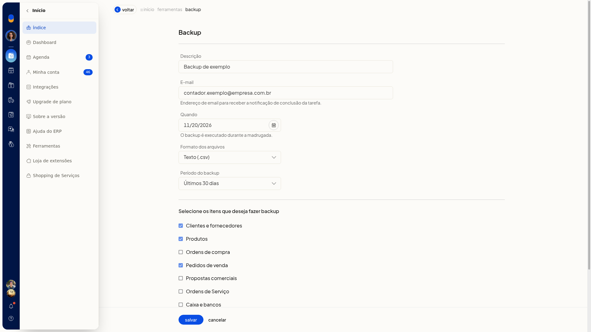

Backup dos dados
Instruções
- Acesse Início > Ferramentas > Backup.
- Use os filtros Em aberto e por período, ou limpar filtros.
- Clique em Incluir Backup.
- Informe o E-mail, a Descrição e a data em Quando. Esses campos não são obrigatórios. O E-mail recebe o aviso de conclusão da tarefa.
- Escolha Texto (.csv) ou Excel (.xls) em Formato e o Período abaixo. Formato e Período não são obrigatórios.
-
Últimos 30 dias
-
3 meses
-
6 meses
-
1 ano

- Marque o que incluir, por exemplo Clientes e fornecedores, Produtos e Pedidos de venda. Também há Ordens de compra e Propostas comerciais.
- Clique em Salvar para agendar o backup. Para descartar, clique em Cancelar.